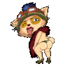
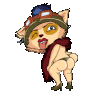

Por muitos anos nós jogadores de league of legends
com pouca habilidade de game play, tentamos sair
desse pesadelo chamado "low elo", porém sem exito.
Tentamos de todas as formas fechar os olhos para as nossas
jogabilidades criminosas, colocando culpa em outras lanes
ou até mesmo culpando a desenvolvedora, mas no fundo
dos nossos corações e almas, sabemos que nós pertecemos ao
bronze, prata, ouro e no maximo platina!
Mas o que faz nós, low elos, acharmos que não pertencemos
a essa classe dos low elos?
Uma pesquisa feita por um jogador do game chamado Matheus Rasteli, aponta que é muito difícil sair do tão famigerado low elo por conta dos "Trols"(pessoas que jogam com a intenção de sabotar a jogatina dos aliados), e que também a desenvolvedora não consegue estabelecer um equilibrio entre os jogadores de low elo com habilidades, e os que não possuem habilidade, tornando assim as partidas desequilibradas e frustrante